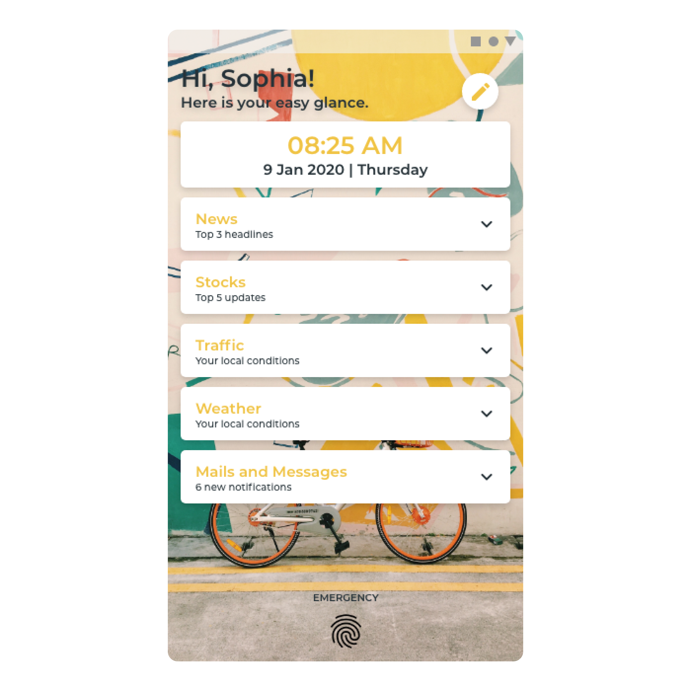
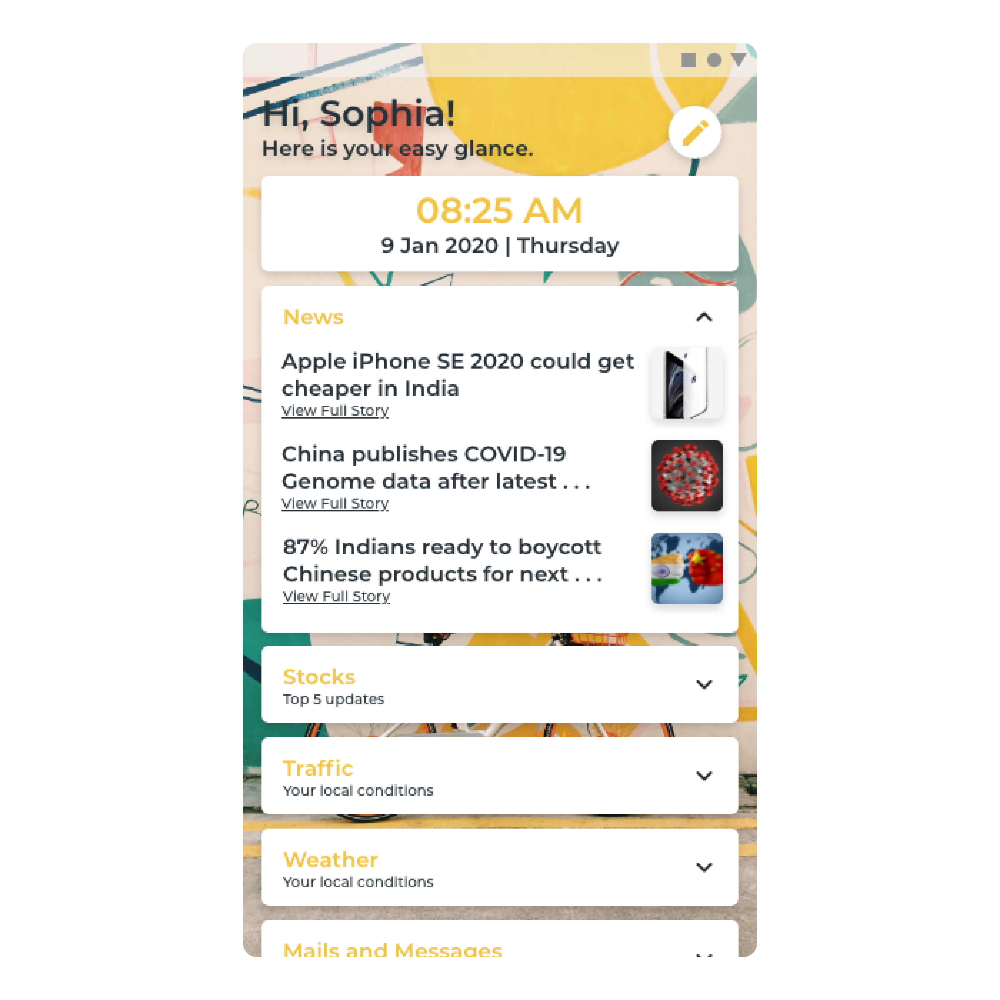
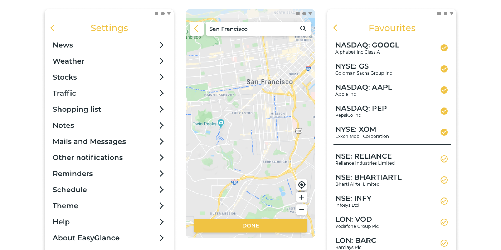
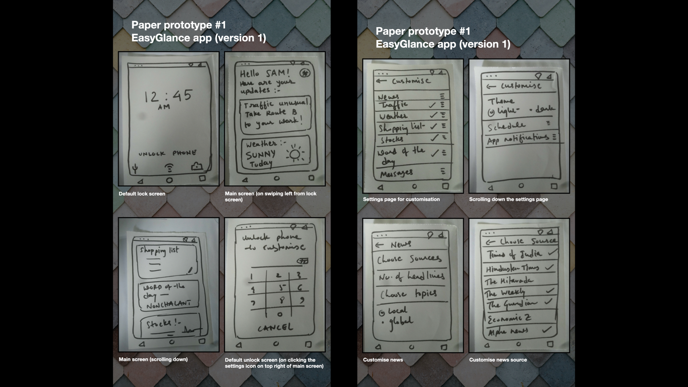
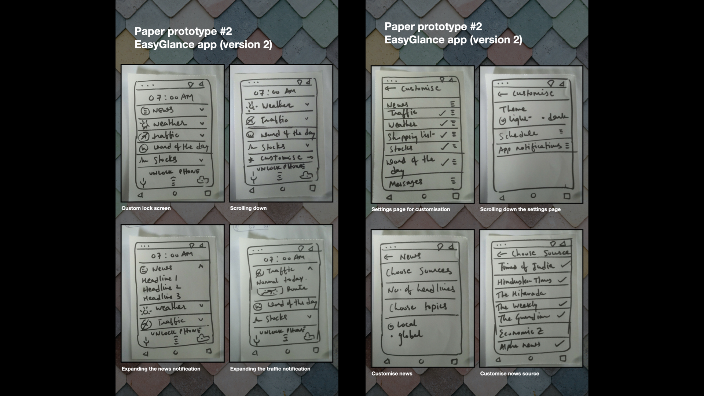
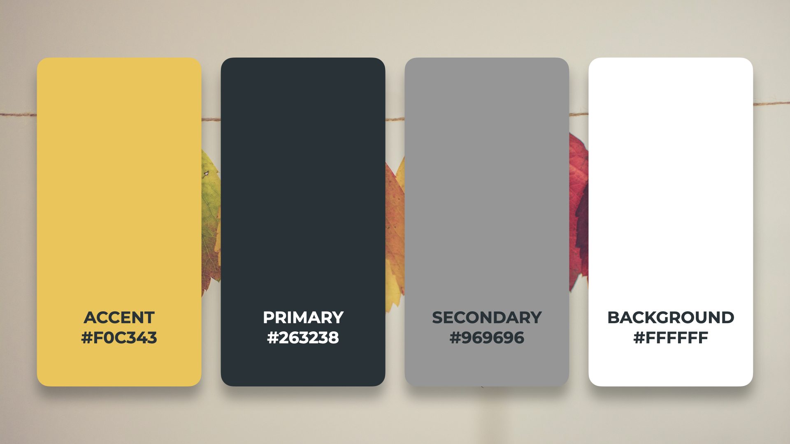
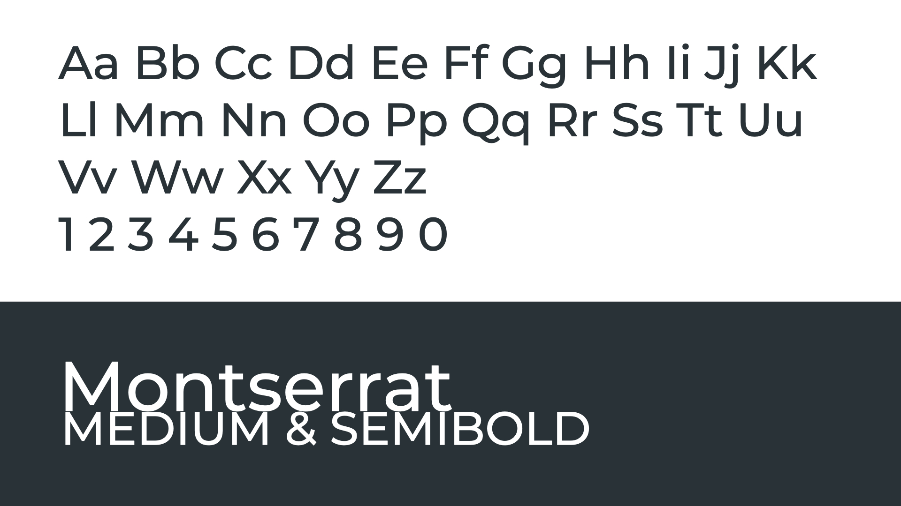
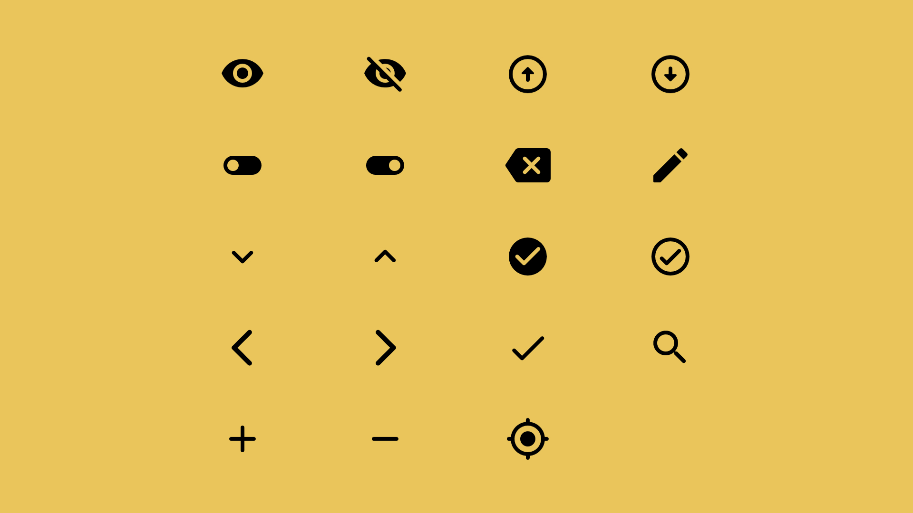
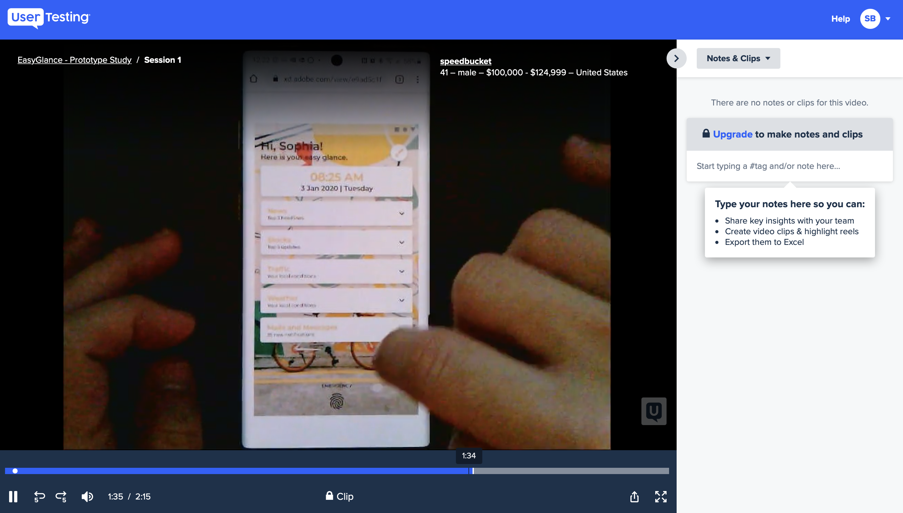

EasyGlance
Getting the exact and precise information you need
Background
This is the capstone project of the Interaction Design Specialisation offered by University of California San Diego through Coursera. I had to choose among the three design briefs:
- Time - Redesign the way we experience or interact with time.
- Change - Design an interface that facilitates personal or social behaviour change.
- Glance - Design a personal dashboard tailored to the needs of people.
I chose the third one, because I felt it had a great opportunity.
Problem Statement
People use their Android smartphones for a varied range of tasks, one of which is glancing at the information. People consume a lot of short information in the form of weather report, news headlines, text messages, etc. While there are separate channels that provide brief as well as detailed information based on different categories, there is no good way to quickly glance through all the information one wants in a single place. How can the experience of glance on Android smartphones be improved?
Solution
A mobile app that transforms the lockscreen into a scrollable feed with personalised content for quick glance.

A personalised feed on the lockscreen, completely customised by the user. Every card can be expanded by a click and cleared with a swipe, just like the usual notifications.
User can choose to either take a quick glance at the personalised information, or take further actions with just a click.


The feed can be customised with a variety of options in the settings.
Need finding
To understand what exactly the users need and expect from the experience of glance on their smartphones, I conducted a small observation experiment. I observed three different categories of people while using Google Assistant Feed, and noted their pain points.
Aditya
21 yrs / College student
He usually glances through the Google Assistant Feed at night, before going to bed, to check upcoming schedule for the next day.
Pain Points
- Weather for next day isn't shown, so he has to search separately for it.
- Lights are off at most times, and the bright light from the screen isn't suitable.
Meena
45 yrs / Housewife
She usually glances through the Google Assistant Feed to check weather and birthdays of her friends.
Pain Points
- She is busy with her chores and would like to have the information available easily.
- Getting to the Google Assistant Feed requires many steps, which is tedious.
Rohit
37 yrs / Professional
He generally uses glance to check his schedule and any upcoming meetings or tasks.
Pain Points
- He is always busy, and doesn't want any extra information other than what he needs.
- He wants all of the stuff to be in one place as per his preferences.
Point of view
Bringing the desired information to the user, as quickly and easily as possible.
User needs
Based on the observation experiment and by analysing the pain points of the participants, I deduced that the glance experience should satisfy three primary user needs.
1
Get desired information quickly
2
In a concise manner, without extra details
3
Easy access to relevant actions
Market research
I looked at the prominent applications that provide a glance experience, and compared them. While they satisfy a majority of the checkpoints, each of them misses out on something.
|
Google Assistant |
Glance Lite |
Floatify |
| Customisation |
clear |
check |
check |
| Minimal information |
check |
clear |
check |
| Easy to use |
clear |
check |
check |
| Variety of info/tasks |
check |
check |
clear |
| Relevant actions |
check |
clear |
check |
Inspiration board
With all the research and observation conducted, it was evident that none of the applications available really satisfied the user needs in a proper way. So, I decided to design an app that would provide all the information a user needs to glance in one place. To name the app, I created an inspiration board with few keywords around the topic and came up with "EasyGlance".

Storyboards
Before beginning with articulation of what the app would actually provide in terms of functionality and features, it was important to get a picture of how the users would use the app that I was about to design. So, I produced two storyboards with similar objectives, but different underlying design ideas.

Storyboard #1

Storyboard #2
Paper prototypes
It is always good to begin with low fidelity prototypes. Paper prototypes are easy to make, and work perfectly for the initial phase. These can be tested with a group of people, and allow instant changes and revisions. Since the features of the app, along with its structure and layout, are quite flexible in the beginning, paper prototypes were my go-to-option.
Since users would want to get to the information and actions they need quickly, why not present them with these options directly when they see their phones? This is when I thought that the lock-screen of the phone would be the optimal screen to present the information that the user needs, since the lock-screen is the first that any user sees.
Paper prototype #1
This prototype was inspired by the Google Assistant Feed, which presents stuff like weather, meetings, etc. in the form of detailed cards. Large cards on the lock-screen would not be a nice first-view of the phone. Thus, a left swipe on the lock-screen to slide in the EasyGlance feed from the right edge would be a decent option. Additionally, I wanted it to be handy for the users to customise their EasyGlance feed right there. Hence, the presence of the edit button right there in the top right.

Paper prototype #1
Paper prototype #2
This prototype was inspired by the very nature of notifications. Notifications arrive on the phone and are displayed on the lock-screen when there is something important to notify. Once the user no longer needs a notification, it can be swiped away. Why not give the information that the user needs in the form of notifications on the lock-screen? The EasyGlance notifications could be expanded to get the information, and could be swiped away if not required.

Paper prototype #2
Heuristic evaluation
My peers in the course evaluated the paper prototypes based on Nielsen's heuristics, and flagged the violations with appropriate description. The severity rating assigned to each heuristic violation helped me in prioritising the critical issues. Based on the heuristic evaluation, I was able to find issues in my paper prototypes, and I fixed the critical ones as I started designing the high fidelity prototype.
High fidelity prototype
I decided to transform paper prototype #2 into high fidelity because users are more familiar with notifications. In the design of high fidelity prototype, I paid attention to minute details such as layout, icons, typography and colour. Each screen of the application was wireframed, and then converted to a fully refined page. This was the point where I actually made decisions about the look and feel.

Colour palette

Type

Icons
In-person experiment
After the completion of the high fidelity prototype, I conducted an in-person experiment with a group of people to find if the app had any usability issues. With a formal testing protocol, the participants were asked to perform a simple task using the prototype, and their actions were closely observed. I also interviewed the participants in the end, to understand their experience.
A/B test
After conducting the in-person experiment, I realised that my design wasn't perfect. Based on the observations and discussions with the participants of the in-person experiment, I made some changes and came up with two designs. A simple online A/B test was hosted on usertesting.com with 4 participants. 3 out 4 participants were able to successfully complete the task, with version A getting a better success rate than version B. Their recorded videos were received, which included their verbal reactions to the task they were performing. By analysing these videos and listening to the participant feedback, I decided to go ahead with version A and improved it with minor modifications.

A/B test on usertesting.com